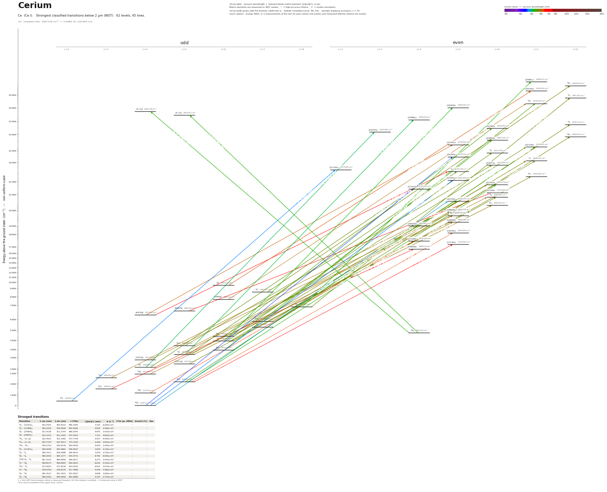

Cerium energy level diagram
Energy levels and transitions of neutral cerium (Ce I): the 90 strongest classified lines below 2 µm from the NIST Atomic Spectra Database and the 67 levels they connect, each line with its vacuum wavelength, frequency and, for 90 of them, the reduced dipole matrix element derived from the NIST transition rate. Measured lifetimes, transition rates, hyperfine constants and isotope shifts from the literature are included, each with its citation.
Hover a line or a level to isolate it, click to keep it selected. Scroll to zoom, drag to move.

Download: diagram (PDF) diagram (SVG) transitions (CSV) levels (CSV) source code

Strongest transitions of cerium
| Transition | λ vac (nm) | λ air (nm) | ν (THz) | |⟨J‖er‖J′⟩| (ea₀) | A (s⁻¹) | Γ/2π up. (MHz) | branch (%) | Use |
|---|---|---|---|---|---|---|---|---|
| 5I°4 – (23155)3 | 501.0501 | 500.9103 | 598.3284 | 5.191 | 6.200e+07 | 13.26 | 74.4 | |
| 5I°5 – (23596)4 | 504.2252 | 504.0846 | 594.5606 | 5.000 | 4.390e+07 | 14.08 | 49.6 | |
| 5I°6 – (24009)5 | 511.4128 | 511.2704 | 586.2044 | 4.976 | 3.410e+07 | 10.68 | 50.8 | |
| 5I°8 – (25991)7 | 521.3372 | 521.1920 | 575.0453 | 7.111 | 4.820e+07 | 12.15 | 63.1 | |
| 3H4 – (4,1)°4 | 522.4915 | 522.3460 | 573.7748 | 6.417 | 6.500e+07 | 10.61 | 97.5 | |
| 3H4 – (4,1)°5 | 524.7374 | 524.5913 | 571.3191 | 6.206 | 4.910e+07 | 8.038 | 97.2 | |
| 5H°7 – 5H7 | 545.0754 | 544.9239 | 550.0018 | 6.403 | 3.420e+07 | 10.33 | 52.7 | |
| 5I°4 – (21161)4 | 556.6508 | 556.4962 | 538.5647 | 5.625 | 4.130e+07 | 11.62 | 56.6 | |
| 5I°5 – 5I5 | 556.7513 | 556.5968 | 538.4674 | 5.076 | 2.750e+07 | 10.4 | 42.1 | |
| 5I°8 – 5I8 | 560.2832 | 560.1277 | 535.0731 | 9.794 | 6.500e+07 | 11.79 | 87.8 | |
| (3211)°5 – 5I6 | 567.1532 | 566.9958 | 528.5917 | 6.373 | 3.470e+07 | 7.543 | 73.2 | |
| 5I°7 – 5K8 | 569.8573 | 569.6993 | 526.0834 | 8.934 | 5.140e+07 | 9.362 | 87.4 | |
| 5H°7 – 5I8 | 572.0623 | 571.9036 | 524.0556 | 8.924 | 5.070e+07 | 9.705 | 83.2 | |
| 3I°7 – 3K8 | 578.9750 | 578.8145 | 517.7986 | 8.426 | 4.360e+07 | 7.998 | 86.8 | |
| 5I°6 – 5K7 | 581.4527 | 581.2915 | 515.5922 | 6.608 | 3.000e+07 | 7.437 | 64.2 | |
| 5I°5 – 5K6 | 594.2502 | 594.0856 | 504.4886 | 6.107 | 2.770e+07 | 5.851 | 75.3 |
λ, ν from NIST level energies unless a measured frequency for this isotope is available. A: measured value or NIST. Γ/2π: natural linewidth of the upper level, 1/(2πτ).
Listed Ce transitions below 2 µm
| Lower level | Upper level | λ vacuum (nm) | λ air (nm) | ν (THz) | Type | |⟨J‖er‖J′⟩| (ea₀) | A (s⁻¹) | Branching (%) | Source of matrix element / A |
|---|---|---|---|---|---|---|---|---|---|
| 1G°4 | (27092)4 | 369.1175 | 369.0125 | 812.1870 | E1 | 0.926 measured | 3.840e+06 measured | 4.34 | Lawler, Chisholm, Nitz, Wood, Sobeck, Den Hartog, J. Phys. B 43, 085701 (2010), Table 3 (… |
| 3H°4 | (27092)4 | 387.4134 | 387.3036 | 773.8309 | E1 | 1.988 measured | 1.530e+07 measured | 17.3 | Lawler, Chisholm, Nitz, Wood, Sobeck, Den Hartog, J. Phys. B 43, 085701 (2010), Table 3 (… |
| 3G°3 | (27092)4 | 389.0641 | 388.9539 | 770.5476 | E1 | 1.372 measured | 7.200e+06 measured | 8.14 | Lawler, Chisholm, Nitz, Wood, Sobeck, Den Hartog, J. Phys. B 43, 085701 (2010), Table 3 (… |
| 1G°4 | (25641)3 | 390.0065 | 389.8960 | 768.6858 | E1 | 0.697 measured | 2.370e+06 measured | 3.72 | Lawler, Chisholm, Nitz, Wood, Sobeck, Den Hartog, J. Phys. B 43, 085701 (2010), Table 3 (… |
| 1G°4 | (25492)3 | 392.2788 | 392.1678 | 764.2331 | E1 | 0.565 measured | 1.530e+06 measured | 2.23 | Lawler, Chisholm, Nitz, Wood, Sobeck, Den Hartog, J. Phys. B 43, 085701 (2010), Table 3 (… |
| 1G°4 | (22184)5 | 450.7677 | 450.6413 | 665.0709 | E1 | 1.698 NIST | 5.800e+06 NIST | 18 | NIST ASD (accuracy B+) |
| 1G°4 | (21581)5 | 463.3618 | 463.2321 | 646.9943 | E1 | 2.730 NIST | 1.380e+07 NIST | 29.3 | NIST ASD (accuracy B+) |
| 3F°2 | (21726)1 | 465.1808 | 465.0506 | 644.4643 | E1 | 1.554 NIST | 1.620e+07 NIST | 39.5 | NIST ASD (accuracy B+) |
| 1G°4 | (21161)4 | 472.5632 | 472.4310 | 634.3966 | E1 | 1.142 measured | 2.780e+06 measured | 3.81 | Curry, J. Phys. D: Appl. Phys. 42, 135205 (2009), Table 1 |
| 3H°5 | (23190)6 | 476.6052 | 476.4720 | 629.0163 | E1 | 1.667 measured | 4.000e+06 measured | 6.56 | Curry, J. Phys. D: Appl. Phys. 42, 135205 (2009), Table 1 |
| 1G°4 | (20730)5 | 482.3895 | 482.2548 | 621.4738 | E1 | 2.847 NIST | 1.330e+07 NIST | 22.9 | NIST ASD (accuracy B+) |
| 3H°5 | (22851)6 | 484.4408 | 484.3055 | 618.8423 | E1 | 2.184 measured | 6.540e+06 measured | 12.6 | Curry, J. Phys. D: Appl. Phys. 42, 135205 (2009), Table 1 |
| 3H°4 | (21581)5 | 492.5627 | 492.4252 | 608.6382 | E1 | 1.943 measured | 5.820e+06 measured | 12.3 | Curry, J. Phys. D: Appl. Phys. 42, 135205 (2009), Table 1 |
| 5H°7 | (25991)7 | 495.3324 | 495.1942 | 605.2350 | E1 | 1.914 measured | 4.070e+06 measured | 5.33 | Curry, J. Phys. D: Appl. Phys. 42, 135205 (2009), Table 1 |
| 3H°6 | 5H7 | 495.7345 | 495.5961 | 604.7440 | E1 (intercombination) | 1.916 measured | 4.070e+06 measured | 6.27 | Curry, J. Phys. D: Appl. Phys. 42, 135205 (2009), Table 1 |
| 5I°4 | (23155)3 | 501.0501 | 500.9103 | 598.3284 | E1 | 5.191 NIST | 6.200e+07 NIST | 74.4 | NIST ASD (accuracy B+) |
| 5I°5 | (23596)4 | 504.2252 | 504.0846 | 594.5606 | E1 | 5.000 NIST | 4.390e+07 NIST | 49.6 | NIST ASD (accuracy B+) |
| 1G°4 | (19661)5 | 508.6192 | 508.4774 | 589.4242 | E1 | 0.963 measured | 1.297e+06 measured | 6.11 | branching ratio / lifetime |
| 5I°6 | (24009)5 | 511.4128 | 511.2704 | 586.2044 | E1 | 4.976 NIST | 3.410e+07 NIST | 50.8 | NIST ASD (accuracy B+) |
| (3211)°5 | (22741)5 | 512.0311 | 511.8885 | 585.4965 | E1 | 2.401 measured | 7.910e+06 measured | 14.7 | Curry, J. Phys. D: Appl. Phys. 42, 135205 (2009), Table 1 |
| 3H°4 | (20730)5 | 514.1200 | 513.9768 | 583.1177 | E1 | 1.396 measured | 2.640e+06 measured | 4.54 | Curry, J. Phys. D: Appl. Phys. 42, 135205 (2009), Table 1 |
| 3G°5 | (23596)4 | 515.5423 | 515.3988 | 581.5089 | E1 | 2.440 measured | 9.780e+06 measured | 11.1 | Curry, J. Phys. D: Appl. Phys. 42, 135205 (2009), Table 1 |
| 5I°8 | (25991)7 | 521.3372 | 521.1920 | 575.0453 | E1 | 7.111 NIST | 4.820e+07 NIST | 63.1 | NIST ASD (accuracy B+) |
| 3H4 | (4,1)°4 | 522.4915 | 522.3460 | 573.7748 | E1 | 6.417 NIST | 6.500e+07 NIST | 97.5 | NIST ASD (accuracy B+) |
| 3H°5 | (21325)6 | 523.1198 | 522.9742 | 573.0856 | E1 | 4.043 NIST | 1.780e+07 NIST | 42.5 | NIST ASD (accuracy B+) |
| 3H4 | (4,1)°5 | 524.7374 | 524.5913 | 571.3191 | E1 | 6.206 NIST | 4.910e+07 NIST | 97.2 | NIST ASD (accuracy B+) |
| 3H°6 | (22851)6 | 529.8038 | 529.6564 | 565.8556 | E1 | 4.633 NIST | 2.250e+07 NIST | 43.4 | NIST ASD (accuracy B+) |
| 5H°7 | 5I8 | 530.3594 | 530.2119 | 565.2628 | E1 | 2.120 measured | 3.590e+06 measured | 4.85 | Curry, J. Phys. D: Appl. Phys. 42, 135205 (2009), Table 1 |
| 3H°6 | (22739)7 | 532.9567 | 532.8085 | 562.5081 | E1 | 4.840 NIST | 2.090e+07 NIST | 42.2 | NIST ASD (accuracy B+) |
| 3G°5 | (22851)6 | 536.1457 | 535.9966 | 559.1623 | E1 | 2.224 measured | 5.000e+06 measured | 9.65 | Curry, J. Phys. D: Appl. Phys. 42, 135205 (2009), Table 1 |
| 5I°8 | (25434)7 | 536.9032 | 536.7540 | 558.3733 | E1 | 2.765 measured | 6.670e+06 measured | 13.7 | Curry, J. Phys. D: Appl. Phys. 42, 135205 (2009), Table 1 |
| 3H°5 | (20730)5 | 539.9137 | 539.7636 | 555.2599 | E1 | 4.491 NIST | 2.360e+07 NIST | 40.6 | NIST ASD (accuracy B+) |
| (3211)°5 | 5I5 | 540.1095 | 539.9593 | 555.0587 | E1 | 1.850 measured | 4.000e+06 measured | 6.12 | Curry, J. Phys. D: Appl. Phys. 42, 135205 (2009), Table 1 |
| 5H°6 | (23190)6 | 542.1889 | 542.0382 | 552.9299 | E1 | 4.689 NIST | 2.150e+07 NIST | 35.3 | NIST ASD (accuracy B+) |
| 3H°4 | (19661)5 | 544.0207 | 543.8696 | 551.0681 | E1 | 0.991 measured | 1.124e+06 measured | 5.29 | branching ratio / lifetime |
| 5H°7 | 5H7 | 545.0754 | 544.9239 | 550.0018 | E1 | 6.403 NIST | 3.420e+07 NIST | 52.7 | NIST ASD (accuracy B+) |
| 5H°6 | (22739)7 | 555.7801 | 555.6258 | 539.4084 | E1 | 4.978 NIST | 1.950e+07 NIST | 39.4 | NIST ASD (accuracy B+) |
| 3G°5 | (22184)5 | 556.0186 | 555.8643 | 539.1770 | E1 | 1.648 measured | 2.910e+06 measured | 9.02 | Curry, J. Phys. D: Appl. Phys. 42, 135205 (2009), Table 1 |
| 5I°7 | 5I8 | 556.5785 | 556.4239 | 538.6347 | E1 | 2.753 measured | 5.240e+06 measured | 8.59 | Curry, J. Phys. D: Appl. Phys. 42, 135205 (2009), Table 1 |
| 5I°4 | (21161)4 | 556.6508 | 556.4962 | 538.5647 | E1 | 5.625 NIST | 4.130e+07 NIST | 56.6 | NIST ASD (accuracy B+) |
| 5I°5 | 5I5 | 556.7513 | 556.5968 | 538.4674 | E1 | 5.076 NIST | 2.750e+07 NIST | 42.1 | NIST ASD (accuracy B+) |
| (3211)°5 | (21161)4 | 557.0842 | 556.9295 | 538.1457 | E1 | 1.490 measured | 2.890e+06 measured | 3.96 | Curry, J. Phys. D: Appl. Phys. 42, 135205 (2009), Table 1 |
| 3H°6 | (21877)6 | 558.6160 | 558.4609 | 536.6700 | E1 | 1.712 measured | 2.620e+06 measured | 4.72 | Curry, J. Phys. D: Appl. Phys. 42, 135205 (2009), Table 1 |
| 5I°6 | 5I6 | 559.7430 | 559.5876 | 535.5895 | E1 | 4.884 NIST | 2.120e+07 NIST | 48.8 | NIST ASD (accuracy B+) |
| 5I°8 | 5I8 | 560.2832 | 560.1277 | 535.0731 | E1 | 9.794 NIST | 6.500e+07 NIST | 87.8 | NIST ASD (accuracy B+) |
| 3G°5 | (21877)6 | 565.6709 | 565.5140 | 529.9768 | E1 | 5.463 NIST | 2.570e+07 NIST | 46.3 | NIST ASD (accuracy B+) |
| (3211)°5 | 5I6 | 567.1532 | 566.9958 | 528.5917 | E1 | 6.373 NIST | 3.470e+07 NIST | 73.2 | NIST ASD (accuracy B+) |
| 5I°6 | 5I7 | 567.9328 | 567.7752 | 527.8661 | E1 | 5.298 NIST | 2.070e+07 NIST | 36.2 | NIST ASD (accuracy B+) |
| 5H°6 | 5I6 | 569.0072 | 568.8493 | 526.8694 | E1 | 2.196 measured | 4.080e+06 measured | 9.38 | Curry, J. Phys. D: Appl. Phys. 42, 135205 (2009), Table 1 |
| 5I°5 | (21325)6 | 569.4525 | 569.2945 | 526.4574 | E1 | 4.327 NIST | 1.580e+07 NIST | 37.8 | NIST ASD (accuracy B+) |
| 5I°7 | 5K8 | 569.8573 | 569.6993 | 526.0834 | E1 | 8.934 NIST | 5.140e+07 NIST | 87.4 | NIST ASD (accuracy B+) |
| 5H°7 | 5I8 | 572.0623 | 571.9036 | 524.0556 | E1 | 8.924 NIST | 5.070e+07 NIST | 83.2 | NIST ASD (accuracy B+) |
| 3H°5 | (19661)5 | 572.9865 | 572.8276 | 523.2104 | E1 | 0.547 measured | 2.932e+05 measured | 1.38 | branching ratio / lifetime |
| 3I°7 | (25991)7 | 574.6268 | 574.4674 | 521.7168 | E1 | 3.209 measured | 7.330e+06 measured | 9.6 | Curry, J. Phys. D: Appl. Phys. 42, 135205 (2009), Table 1 |
| 5I°5 | (21161)4 | 574.8057 | 574.6463 | 521.5545 | E1 | 1.470 measured | 2.560e+06 measured | 3.51 | Curry, J. Phys. D: Appl. Phys. 42, 135205 (2009), Table 1 |
| 5H°6 | 5I7 | 577.4724 | 577.3123 | 519.1460 | E1 | 6.112 NIST | 2.620e+07 NIST | 45.9 | NIST ASD (accuracy B+) |
| 3I°7 | 3K8 | 578.9750 | 578.8145 | 517.7986 | E1 | 8.426 NIST | 4.360e+07 NIST | 86.8 | NIST ASD (accuracy B+) |
| 5H°4 | (19661)5 | 580.6039 | 580.4429 | 516.3460 | E1 | 3.288 measured | 1.017e+07 measured | 47.9 | branching ratio / lifetime |
| 5I°6 | 5K7 | 581.4527 | 581.2915 | 515.5922 | E1 | 6.608 NIST | 3.000e+07 NIST | 64.2 | NIST ASD (accuracy B+) |
| 5I°5 | (20730)5 | 589.4097 | 589.2464 | 508.6317 | E1 | 1.557 measured | 2.180e+06 measured | 3.75 | Curry, J. Phys. D: Appl. Phys. 42, 135205 (2009), Table 1 |
| 3H°4 | (18195)5 | 591.1750 | 591.0112 | 507.1129 | E1 | 2.045 measured | 3.730e+06 measured | 33.5 | Curry, J. Phys. D: Appl. Phys. 42, 135205 (2009), Table 1 |
| 5H°6 | (21581)5 | 594.0083 | 593.8438 | 504.6940 | E1 | 2.035 measured | 3.640e+06 measured | 7.72 | Curry, J. Phys. D: Appl. Phys. 42, 135205 (2009), Table 1 |
| 5I°5 | 5K6 | 594.2502 | 594.0856 | 504.4886 | E1 | 6.107 NIST | 2.770e+07 NIST | 75.3 | NIST ASD (accuracy B+) |
| 5H°3 | (19015)4 | 600.7523 | 600.5860 | 499.0284 | E1 | 2.578 NIST | 6.900e+06 NIST | 45.1 | NIST ASD (accuracy B+) |
| 3G°5 | 5I6 | 600.8483 | 600.6819 | 498.9487 | E1 (intercombination) | 2.914 NIST | 6.100e+06 NIST | 12.9 | NIST ASD (accuracy B+) |
| 5H°4 | (19062)5 | 601.5085 | 601.3420 | 498.4010 | E1 | 2.835 NIST | 6.800e+06 NIST | 52.9 | NIST ASD (accuracy B+) |
| 5I°4 | 5K5 | 602.5863 | 602.4195 | 497.5096 | E1 | 4.533 NIST | 1.730e+07 NIST | 63 | NIST ASD (accuracy B+) |
| 3F°4 | (19661)5 | 603.8310 | 603.6638 | 496.4840 | E1 | 1.155 measured | 1.117e+06 measured | 5.26 | branching ratio / lifetime |
| (3312)°4 | (19844)5 | 604.9071 | 604.7396 | 495.6008 | E1 | 2.571 NIST | 5.500e+06 NIST | 21.7 | NIST ASD (accuracy B+) |
| 5I°8 | 5I8 | 607.0321 | 606.8640 | 493.8659 | E1 | 1.966 measured | 2.060e+06 measured | 3.38 | Curry, J. Phys. D: Appl. Phys. 42, 135205 (2009), Table 1 |
| 5I°4 | (19661)5 | 607.3685 | 607.2004 | 493.5924 | E1 | 2.050 measured | 3.455e+06 measured | 16.3 | branching ratio / lifetime |
| (7696)°6 | 5H7 | 607.8294 | 607.6612 | 493.2181 | E1 | 2.543 NIST | 3.890e+06 NIST | 5.99 | NIST ASD (accuracy B+) |
| (6476)°4 | (22741)5 | 614.8131 | 614.6430 | 487.6156 | E1 | 3.117 NIST | 7.700e+06 NIST | 14.3 | NIST ASD (accuracy B+) |
| 3I°6 | (25434)7 | 621.0703 | 620.8985 | 482.7029 | E1 | 5.634 NIST | 1.790e+07 NIST | 36.9 | NIST ASD (accuracy B+) |
| 5H°6 | 5I6 | 621.2771 | 621.1053 | 482.5423 | E1 | 1.539 measured | 1.540e+06 measured | 3.25 | Curry, J. Phys. D: Appl. Phys. 42, 135205 (2009), Table 1 |
| 3H°5 | (18195)5 | 625.5382 | 625.3652 | 479.2552 | E1 | 1.289 NIST | 1.250e+06 NIST | 11.2 | NIST ASD (accuracy B+) |
| 3H°4 | (17148)4 | 630.1946 | 630.0204 | 475.7141 | E1 | 1.847 NIST | 3.070e+06 NIST | 43.3 | NIST ASD (accuracy B+) |
| (3211)°5 | (19062)5 | 630.8386 | 630.6642 | 475.2285 | E1 | 1.495 measured | 1.640e+06 measured | 12.8 | Curry, J. Phys. D: Appl. Phys. 42, 135205 (2009), Table 1 |
| 3H°6 | (19661)5 | 637.5529 | 637.3767 | 470.2236 | E1 | 0.551 measured | 2.161e+05 measured | 1.02 | branching ratio / lifetime |
| 3G°5 | (19844)5 | 639.2089 | 639.0323 | 469.0054 | E1 | 1.342 measured | 1.270e+06 measured | 5.02 | Curry, J. Phys. D: Appl. Phys. 42, 135205 (2009), Table 1 |
| 3G°3 | (16869)4 | 645.9818 | 645.8033 | 464.0881 | E1 | 2.221 NIST | 4.120e+06 NIST | 32.4 | NIST ASD (accuracy B+) |
| 3G°5 | (19661)5 | 646.7590 | 646.5803 | 463.5304 | E1 | 0.387 measured | 1.017e+05 measured | 0.479 | branching ratio / lifetime |
| (6476)°4 | 5I5 | 655.7460 | 655.5649 | 457.1777 | E1 | 3.297 NIST | 7.100e+06 NIST | 10.9 | NIST ASD (accuracy B+) |
| 3H°5 | (17120)5 | 670.6123 | 670.4272 | 447.0429 | E1 | 2.231 NIST | 3.040e+06 NIST | 39.8 | NIST ASD (accuracy B+) |
| 5I°6 | (19062)5 | 684.6154 | 684.4265 | 437.8991 | E1 | 1.118 measured | 7.180e+05 measured | 5.59 | Curry, J. Phys. D: Appl. Phys. 42, 135205 (2009), Table 1 |
| 5H°3 | (16869)4 | 689.6464 | 689.4562 | 434.7046 | E1 | 1.087 measured | 8.110e+05 measured | 6.37 | Curry, J. Phys. D: Appl. Phys. 42, 135205 (2009), Table 1 |
| (6663)°5 | (21100)6 | 692.6724 | 692.4814 | 432.8055 | E1 | 3.694 NIST | 6.400e+06 NIST | 22.2 | NIST ASD (accuracy B+) |
| (6476)°4 | (20730)5 | 701.5282 | 701.3348 | 427.3420 | E1 | 1.649 measured | 1.450e+06 measured | 2.49 | Curry, J. Phys. D: Appl. Phys. 42, 135205 (2009), Table 1 |
| (6663)°5 | 5K6 | 717.9415 | 717.7437 | 417.5722 | E1 | 1.810 measured | 1.380e+06 measured | 3.75 | Curry, J. Phys. D: Appl. Phys. 42, 135205 (2009), Table 1 |
| 5H°6 | (17120)5 | 808.1608 | 807.9386 | 370.9564 | E1 | 1.350 measured | 6.360e+05 measured | 8.33 | Curry, J. Phys. D: Appl. Phys. 42, 135205 (2009), Table 1 |
Reduced dipole matrix elements follow the convention A = ω³|d|²/(3πε₀ħc³(2J′+1)), with J′ the upper level. Tags show where a number comes from: measured, NIST compilation, high-accuracy theory, or a model calculation.
Ce energy levels
Ce⁺ ionisation limit 44672.00 cm⁻¹ = 5.53862 eV (223.854 nm)
Sources
- Curry, J. Phys. D: Appl. Phys. 42, 135205 (2009), Table 1
- Den Hartog, Buettner, Lawler, J. Phys. B 42, 085006 (2009), Table 1 (pp. 4-6; time-resolv…
- Lawler, Chisholm, Nitz, Wood, Sobeck, Den Hartog, J. Phys. B 43, 085701 (2010), Table 3 (…
- NIST ASD
- NIST ASD level energies
- branching ratio / lifetime
Level lifetimes: all 153 levels of Den Hartog, Buettner, Lawler, J. Phys. B 42, 085006 (2009), Table 1 (PDF saved as pdf/Ce_DenHartog_2009.pdf; bronze open access on the publisher site), parsed from the PDF text and matched to NIST level energies and J (all 153 matched within 0.002 cm-1; the 25384.989 level has J "3 or 4 or 5"). The paper states one common uncertainty of ±5 % (which the authors call closer to two sigma); unc = 5 % of the value. The values of Bisson 1991, Li 2000 and Xu 2003 printed in the "Other" column are stored as "alternatives" with method "compilation"; Den Hartog et al. find the Bisson lifetimes systematically longer (mean -35.5 %). Transitions: (a) 32 lines between drawn levels for which NIST gives no A, from Curry 2009 (semi-empirical arc-intensity values, ±35 %, likely biased high, see conflicts); (b) the 5 printed stub rows of Table 3 of Lawler et al. 2010 (PDF pdf/Ce_Lawler_2010.pdf) with A and uncertainty as printed; (c) the 24 branching fractions of the 19661.076 cm-1 (J=5) level from Table 2 of Lawler et al. 2010 - the table lists 24 of the 43 detected branches and the fractions sum to 0.904; no A is stored for these (it would be fraction/lifetime, a derived number; e.g. the 607.2 nm branch 0.16273/47.1 ns reproduces the NIST value 3.45e6 s-1, so NIST reference T8748 is this paper). Sanity check: lifetime x (sum of NIST A plus the Curry/Lawler A entered here) is at most 0.97 for the 51 levels that have both. The stable Ce isotopes have nuclear s
Atoms with measured data
- Lithium-632 levels, 85 lines
- Lithium-732 levels, 85 lines
- Beryllium-917 levels, 26 lines
- Sodium-2336 levels, 106 lines
- Magnesium-2418 levels, 61 lines
- Magnesium-2518 levels, 61 lines
- Potassium-3934 levels, 84 lines
- Potassium-4034 levels, 84 lines
- Potassium-4134 levels, 84 lines
- Calcium-4035 levels, 61 lines
- Calcium-4335 levels, 61 lines
- Chromium-5256 levels, 87 lines
- Chromium-5356 levels, 87 lines
- Rubidium-8536 levels, 94 lines
- Rubidium-8736 levels, 94 lines
- Strontium-8440 levels, 70 lines
- Strontium-8640 levels, 70 lines
- Strontium-8740 levels, 70 lines
- Strontium-8840 levels, 70 lines
- Cadmium-11115 levels, 21 lines
- Cadmium-11315 levels, 21 lines
- Cadmium-11415 levels, 21 lines
- Caesium-13331 levels, 79 lines
- Barium-13744 levels, 89 lines
- Barium-13844 levels, 89 lines
- Dysprosium-16139 levels, 55 lines
- Dysprosium-16239 levels, 55 lines
- Dysprosium-16339 levels, 55 lines
- Dysprosium-16439 levels, 55 lines
- Erbium-16673 levels, 90 lines
- Erbium-16773 levels, 90 lines
- Erbium-16873 levels, 90 lines
- Thulium-16972 levels, 73 lines
- Ytterbium-17118 levels, 26 lines
- Ytterbium-17318 levels, 26 lines
- Ytterbium-17418 levels, 26 lines
- Mercury-19927 levels, 47 lines
- Mercury-20127 levels, 47 lines
- Mercury-20227 levels, 47 lines